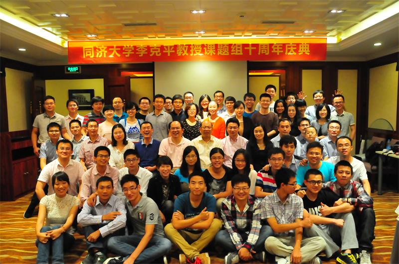

联系我们
加为收藏
设为首页
李克平教授课题组
同济大学交通运输工程学院
登录
首 页
团队介绍
概 况
教 授
研究生
报考指南
科研实践
纵向课题
横向课题
硕博论文
期刊论文
课程讲座
课程资料
讲 座
软件介绍
合作交流
科研会议
西门子中心
案例展示
交通仿真
交叉口设计
信号设计
新闻公告
新闻动态
校园公告

李克平
教授、博士生导师
研究方向：
交通仿真，实验交通工程，交通系统分析，智能交通系统，交叉口规划与设计等。
More>>
新闻公告
23111
34111